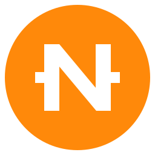

NIR Wallet
Сейф для денег будущего
◈Защита от квантовых компьютеров
@Имя вместо адреса: athena.nir
✓Сам проверяет каждый баланс
★Скоро: BTC, ETH и обмен внутри

NIR Начать майнингПервый блокчейн, где каждая монета рождается из решённой задачи. Без ферм, шума и счетов за электричество — ваш компьютер, одна кнопка и задачи, которые становятся сложнее вместе с искусственным интеллектом.
macOS и Linux — уже сейчас · Windows — скоро
Биткоин тратит электричество целых стран на перебор случайных чисел. NIR тратит его на решение задач: найти решение трудно, проверить — мгновенно. Чем умнее становятся программы и ИИ, тем сложнее задачи — так прогресс интеллекта превращается в редкость монеты.
В 2009 году биткоин майнили на домашних компьютерах. NIR сейчас в той же точке. 210 000 NIR — 1% всех монет — уже отложены для тех, кто майнит в тестовой сети. При запуске основной сети они разделятся между первопроходцами по их заслугам.
пул первопроходцев · 1% всех монет
Никакой регистрации, паспорта и почты. Адрес не связан с вашим именем. А впереди — полностью невидимые переводы: никто не увидит ни отправителя, ни получателя, ни сумму. Захотите — покажете бухгалтеру ключом просмотра.
Сейф для денег будущего
Одна кнопка — и вы майните
Откройте «Терминал» (на Mac: ⌘ + пробел → «Терминал»), вставьте команду и нажмите Enter. NIR соберётся прямо на вашем компьютере из открытого кода.
curl -fsSL https://nircoin.com/install.sh | bashmacOS 13+ или Linux · Windows — скоро
NIR Wallet покажет 24 слова. Запишите их на бумагу: это ключ ко всем вашим монетам и к награде первопроходца.
В NIR Майнере нажмите «Подключить NIR Wallet» и «Начать майнинг». Займите своё имя.nir, пока оно свободно.
Ни предпродаж, ни скрытых кошельков, ни печатного станка: каждое правило записано в открытом коде.
Протокол, постквантовые подписи, имена .nir, кошелёк и майнер
Сеть открыта, первые майнеры, программа первопроходцев
СЕЙЧАСУзлы по всему миру, Windows, обозреватель блоков, рейтинг майнеров
Охота за уязвимостями с наградами, независимые аудиты
Основная сеть. NIR становятся настоящими монетами, первопроходцы получают награду
Скрытые переводы и мультикошелёк: BTC, ETH, стейблкоины
ИИ-агенты и программы платят друг другу в NIR за вычисления и проверку
Займите имя.nir раньше других и станьте одним из первых майнеров новой сети.